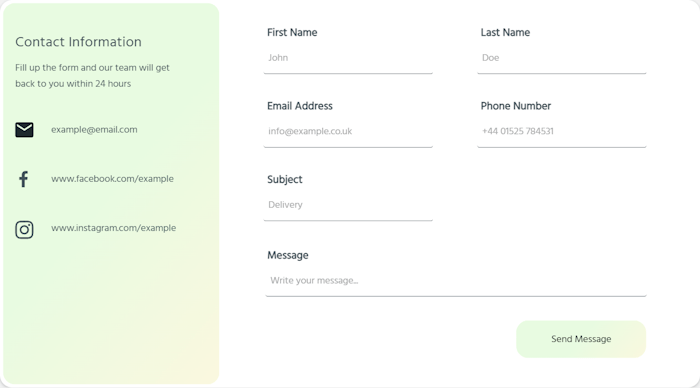
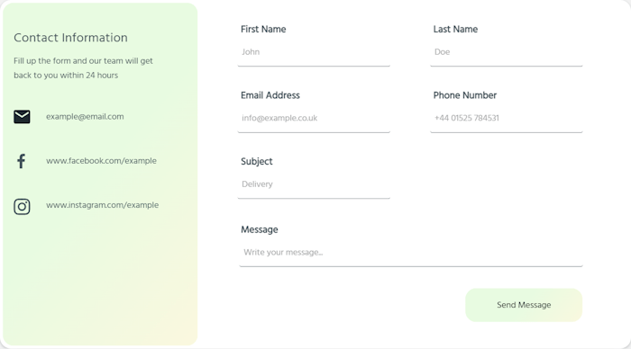
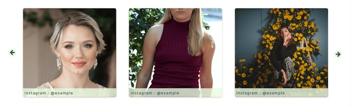
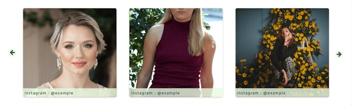

TOP
TOP


Decor Vanity is an ecommerce website that will be focused on selling home decor for young childrens rooms. This can range from decorative letters for the walls or stuffed teddy bears with text. Using this colours also allows them to blend in with the more dominant white colour used throughout the design allowing the content to flow into each other.
Anthony Jasper, Kieran James
Designer
UXpin
The main problem for this design was to have it suitable for adults but make it look appealing for a childs bedroom.
14
Development - Days
6
Design Patterns
14
Sections
50
Users - Month
Since this project is focused on decorative items and for a young audience, I decided to go with soft colours. I chose to go with a gradient of green and yellow to symbolise growth and youth which compliment each other well.
For the typography I kept everything as a single font throughout the site. I used a font that had good character spacing for all sizes and style but also looked sharp and didn't have any trail offs at the end of each character. To allow the font to differentiate itself from itself and to create a hierarchy, I used a mixture of font size and bolded the titles.
When it comes to an ecommerce design, there are many design patterns to focus on, so the one I wish to highlight upon is the product page. Here I have used large white container boxes to separate the focus points of the page. The first container purely focuses on the product and contains all the call to actions and information the majority of users care about when viewing a product. The second container contains the "secondary" information, which contains reviews for the product, product description and similar products.
Other Design Patterns:
- Cart
- Testimonials
- Pagination
- Home Link
- Thumbnail
 

 
